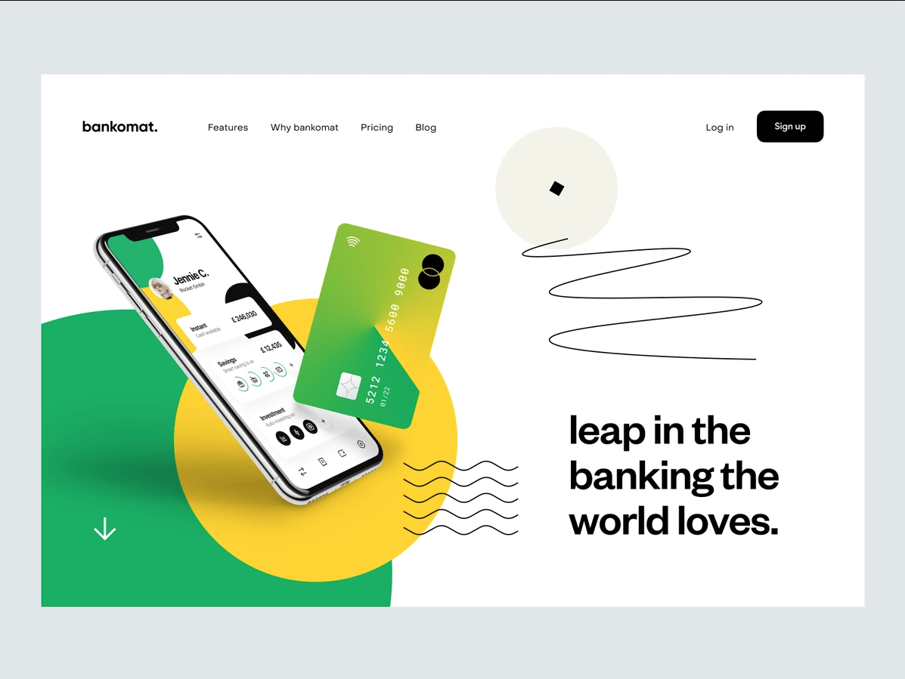

I am Jacob. I am an experienced front-end designer. I help companies reinvent themselves through beautiful and expressive UI.
Projects





Front-end and UX Designer
I am Jacob. I am an experienced front-end designer. I help companies reinvent themselves through beautiful and expressive UI.